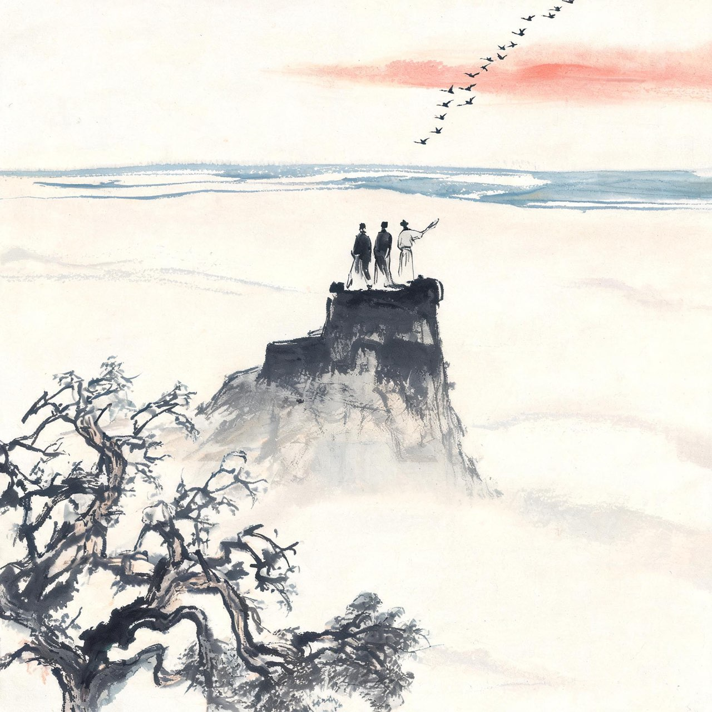
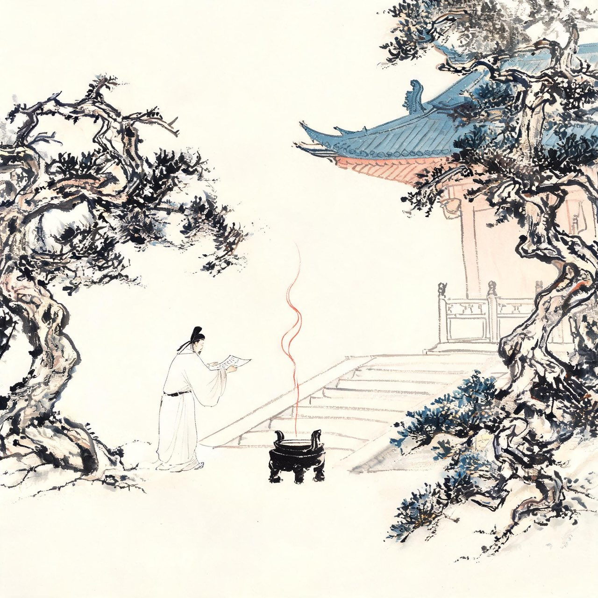
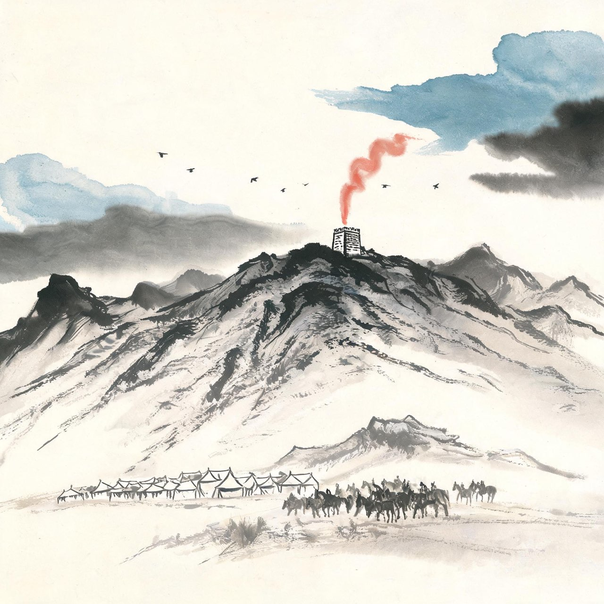

李白 · 744-753
漫游
快意与忧思
事件·洛阳遇杜甫
天宝三载夏，洛阳。四十四岁的你，刚被长安请出门；三十三岁的杜甫，科场失意，客居于此。
一个是名满天下的谪仙人，一个是此时还默默无闻的落第举子。你们一见如故——闻一多说：「四千年的历史里，除了孔子见老子……没有比这两人的会面更重大、更神圣、更可纪念的。」
你没有架子。你们一见如故，约好秋天同游梁宋。
此后杜甫写了一辈子想你的诗：「白也诗无敌，飘然思不群」「渭北春天树，江东日暮云」。你留给他的，是值得余生的怀念。
注
- 李杜相遇年代地点：天宝三载洛阳说（主流，参闻一多考订），另有744年冬初遇东都说细节差异
- '白也诗无敌''渭北春天树'均出杜甫《春日忆李白》，追忆李杜交谊的代表作
- 引语出闻一多《唐诗杂论·杜甫》

梁宋之游
秋天，你兑现了约定。梁宋之地（今开封、商丘一带），你与杜甫、高适三人同行。
三个人，三种境遇：你是刚被放还的翰林，杜甫是落第的诗人，高适是尚未发迹的游侠儿。谁能想到，这三个人日后都会在中国文学史上占据山头。
你们登吹台怀古，纵猎孟诸泽，喝酒，谈天下事。安禄山的名字此时已在北方隐隐作响，你们谈起边事，谁也没想到十年后的结局。
这是杜甫晚年反复回忆的日子：「忆与高李辈，论交入酒垆。……气酣登吹台，怀古视平芜。」
快意如此，此后半生再未有。
注
- 梁宋之游三人组：李白、杜甫、高适，登吹台（禹王台）怀古、孟诸泽打猎——见杜甫《遣怀》《昔游》二诗追忆
- 吹台：开封禹王台，传为师旷吹乐之台

事件·受道箓
这年冬天，你北上齐州（今济南），在紫极宫做了件郑重的事：请高天师如贵道士授道箓。
道箓是道教的正式文凭——从此你在名分上是个道士了。
你对道教的痴迷不是装点。少年时朋友元丹丘就是道门中人，出蜀后遇司马承祯，长安翰林失意后更是整卷整卷地读道经。炼丹、寻仙、访道山，你信了一辈子。
有人说是逃避。你自己不这么认为——长生是真的想，成仙是真的信，尘世的失败是真的疼。三样都是真的。
箓已受，冠已戴。你从此以「青莲居士谪仙人」自处：官方的名分丢了，天上的名分领到了。
注
- 受道箓地点：齐州紫极宫（今济南），师事高如贵——见李白诗题自述
- 受道箓系年取天宝三载（744）冬前，与梁宋之游相接
天宝四载秋，鲁郡石门。杜甫要西去长安了，你在东城门外为他饯行。此后一生，你们再没见过面。回到沙丘城的寓所，你提笔——
沙丘城下寄杜甫
我来竟何事，高卧沙丘城。
城边有古树，日夕连秋声。
鲁酒不可醉，齐歌空复情。
思君若汶水，浩荡寄南征。
注
- 沙丘：李白东鲁寓居地，约在兖州（今山东济宁兖州区）一带
- 石门一别后李杜终生未再会——杜甫存思李白诗十四首，李白存寄杜甫诗四首（存世）
- 鲁酒、齐歌：鲁地的酒、齐地的歌，都是眼前之物，却因你不在而无味
天宝四载，你将南下越中。行前梦游天姥山，醒来写下长歌，留别东鲁的朋友。梦里你踏着谢公的木屐，看半壁海日，听天鸡长鸣；仙人列队而下，霓衣风马。梦醒之后，一切烟消——
梦游天姥吟留别（节选）
〔节选原诗末段（世间行乐至不得开心颜）；全篇为杂言歌行，前有入梦、梦游仙境大段描写（'脚著谢公屐''列缺霹雳，丘峦崩摧'等），此处节取醒后抒怀〕
世间行乐亦如此，古来万事东流水。
别君去兮何时还？且放白鹿青崖间，
须行即骑访名山。
安能摧眉折腰事权贵，使我不得开心颜！
注
- 天姥山：在今浙江新昌、嵊州交界，属越中名山
- 作年取天宝五载（746）前后将游吴越时，'留别'对象为东鲁诸公
- 此诗又名《梦游天姥山别东鲁诸公》；'别君去兮'一作'别君去时'，版本有异文
天宝十一载，嵩山南麓颍阳山居。你的老友元丹丘置酒，岑勋千里相寻。三人置杯高台，黄河在山下奔流。你喝到酣处，站起来，长歌当哭——
将进酒
君不见黄河之水天上来，奔流到海不复回。
君不见高堂明镜悲白发，朝如青丝暮成雪。
人生得意须尽欢，莫使金樽空对月。
天生我材必有用，千金散尽还复来。
烹羊宰牛且为乐，会须一饮三百杯。
岑夫子，丹丘生，将进酒，杯莫停。
与君歌一曲，请君为我倾耳听。
钟鼓馔玉不足贵，但愿长醉不复醒。
古来圣贤皆寂寞，惟有饮者留其名。
陈王昔时宴平乐，斗酒十千恣欢谑。
主人何为言少钱，径须沽取对君酌。
五花马，千金裘，
呼儿将出换美酒，与尔同销万古愁。
注
- 系年异说：取安旗天宝十一载（752）嵩山颍阳说，另有开元间说等——场景地点取颍阳山居（嵩山）
- 岑夫子即岑勋，丹丘生即元丹丘；陈王指曹植，宴平乐用其《名都篇》典
- '不复醒'一作'不愿醒'、又作'不用醒'；'倾耳听'一作'侧耳听'，版本有异文——从底本
- '将（qiāng）进酒'：将，请也，乐府旧题

幽州台上看
天宝十一载，你做了一件此后让所有人后怕的事：北上幽州，深入安禄山的腹地。
你想干什么？你想看看北方到底在发生什么——边庭的传言已经藏不住了：那位胡人节度使，养了同罗、奚、契丹的精兵，粮草堆积如山。
你看见了。燕山脚下，烽火连营；你听见战马的嘶鸣混着胡笳声。你的心沉下去——以你纵横家的眼力，一眼就看懂了这是造反前的备战。
你把看见的写进诗里，胡马、烽火、惊沙、哀号，一首比一首沉。你什么都看见了，也什么都做不了。你只能转身南下，把这些预感一句一句压进诗行。
三年后，渔阳鼙鼓动地来。这三年里你写的那些忧愤之句，成了唐人诗中最惊心的预言。
注
- 幽州之行系年：天宝十载（751）秋冬北上、十一载（752）南下说（安旗）
- 胡马、烽火、胡笳等边塞意象，取《幽州胡马客歌》边塞风物，此处以叙事化用，不作直引
- '渔阳鼙鼓'化用白居易《长恨歌》'渔阳鼙鼓动地来'——为唐人后见之明，此处作叙事者视角
天宝十二载秋，宣城。族叔李云将行，你在谢朓楼上设宴。谢朓，那个你念了一辈子的南朝诗人，曾在这里做太守。秋风万里，雁阵南来——
宣州谢朓楼饯别校书叔云（节选）
〔全诗十二句悉数在此，仅以'……'示意情绪转折，原诗无省略〕
弃我去者，昨日之日不可留；
乱我心者，今日之日多烦忧。
长风万里送秋雁，对此可以酣高楼。
蓬莱文章建安骨，中间小谢又清发。
俱怀逸兴壮思飞，欲上青天揽明月。
……
抽刀断水水更流，举杯消愁愁更愁。
人生在世不称意，明朝散发弄扁舟。
注
- 李云：族叔，时任秘书省校书郎（一说监察御史），题中'校书叔云'一说'校书叔珍'，从通行本
- 小谢：谢朓，南齐诗人，李白平生最推崇的诗人之一，宣城为其旧治
- '消愁'一作'销愁'，版本有异文——从通行
- '揽明月'一作'览明月'，版本有异文